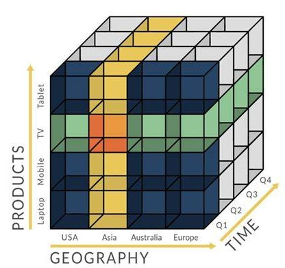
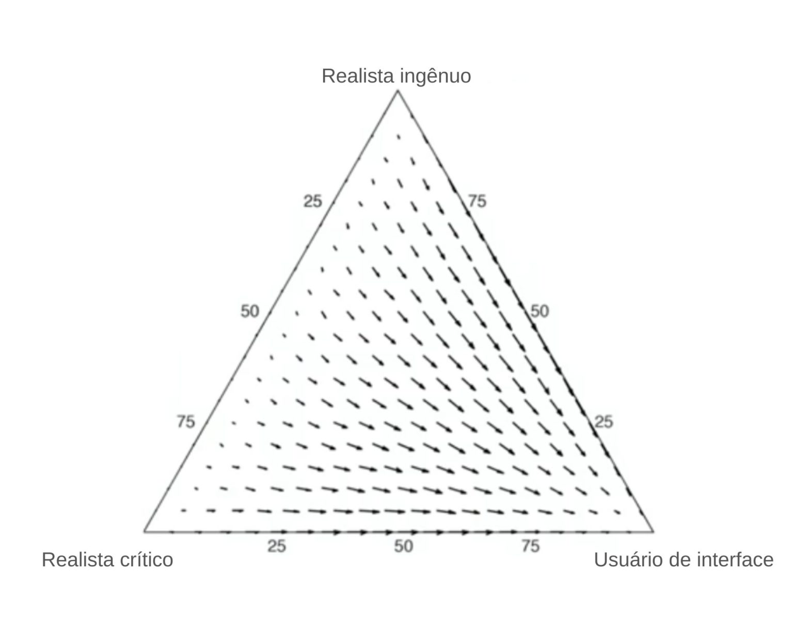
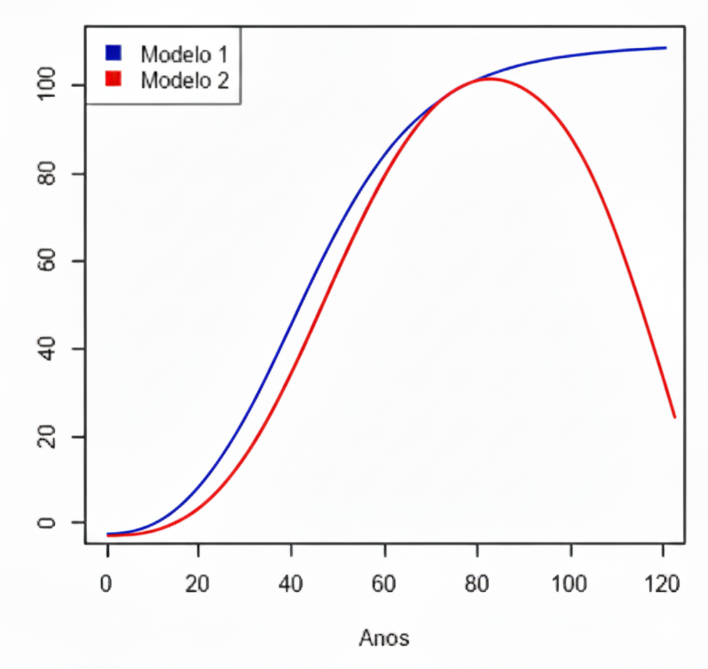
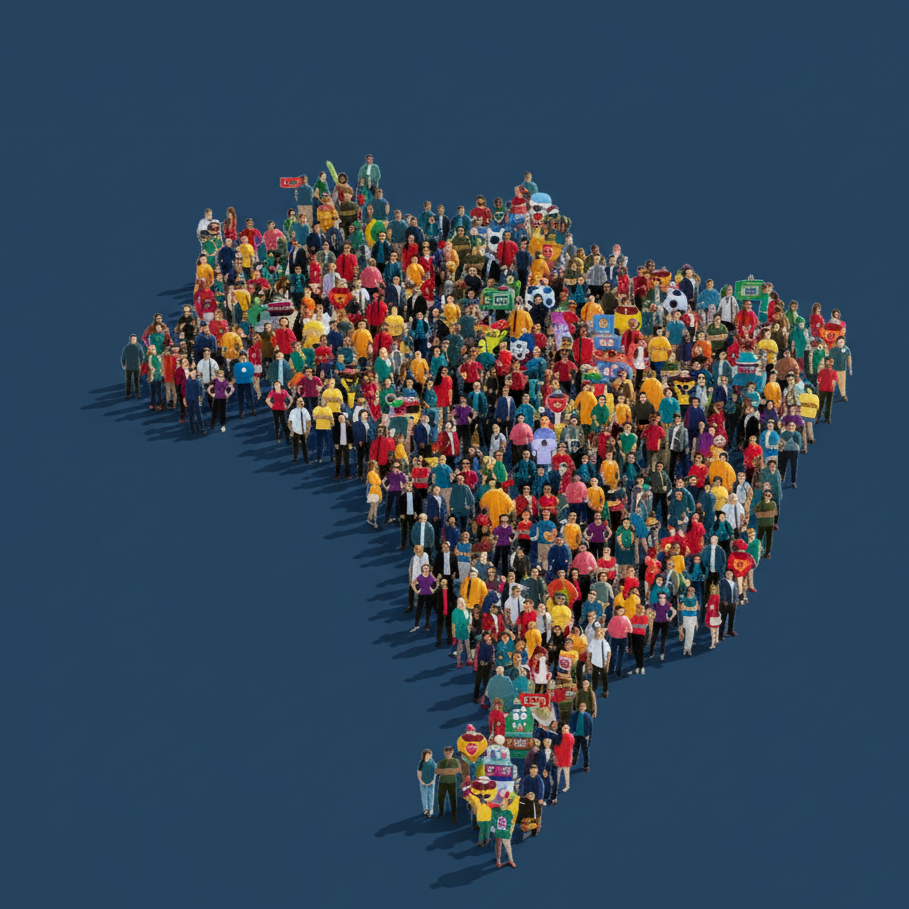
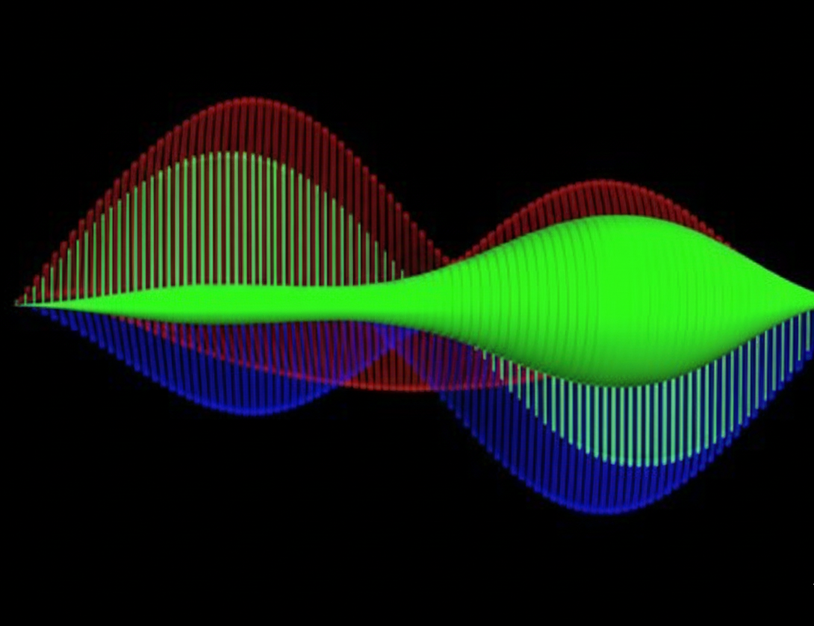
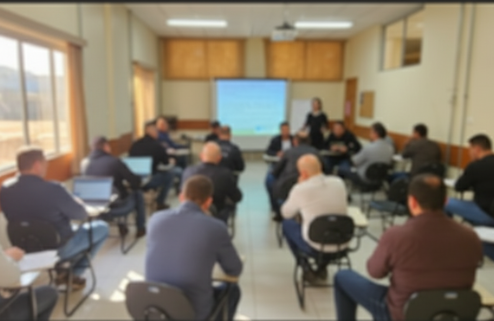

A Laplace Consultoria é a Empresa Júnior dos cursos de Matemática e Estatística do Instituto de Matemática e Estatística (IME) da Universidade Federal de Uberlândia (UFU). Formada e gerida por estudantes de graduação, a Laplace tem como propósito aplicar o conhecimento acadêmico na prática, unindo ciência, inovação e impacto social. Fundada com base no empreendedorismo social e nos princípios de ética, responsabilidade, transparência, cooperação e eficiência, a Laplace atua como um espaço de aprendizado e desenvolvimento, aproximando a universidade do mercado e da comunidade.
Sobre o projeto Laplace
Iniciativa: Copa & Dados
Conheça nosso projeto especial onde aplicamos Estatística, Matemática Computacional e Ciência de Dados para analisar a Copa do Mundo. Transformamos números brutos das partidas em inteligência estratégica e previsões.
Acessar o Projeto Copa & DadosServiços

Automação de dados
Integração de sistemas e automação de coleta de dados, incluindo webscraping, mineração e manutenção de DW.

Matemática computacional
Desenvolvimento de ferramentas Matemáticas em Python, MATLAB, R, e Wolfram.

Modelagem Estatística e predição
Métodos de regressão, machine learning e Redes Neurais para previsões.
Ministrar cursos
Cursos voltados para o ensino de tópicos de Matemática, como álgebra, geometria, Estatística e probabilidade etc.

Pesquisas de mercado e eleitorais
Análise de cenários e da opinião pública para identificar percepções e tendências, fornecendo insights estratégicos.
Planejamento experimental e amostragem
Definição de tamanhos amostrais e planejamento de experimentos.

Otimização de processos
Automação da coleta e unificação de dados de múltiplas fontes, criando uma base centralizada para análises.
Oficinas de Matemática
Jogos matemáticos para escolas e materiais interativos de cunho pedagógico.

Capacitação de docentes
Cursos voltados à capacitação de professores do ensino básico, com foco em novas metodologias e tecnologias.